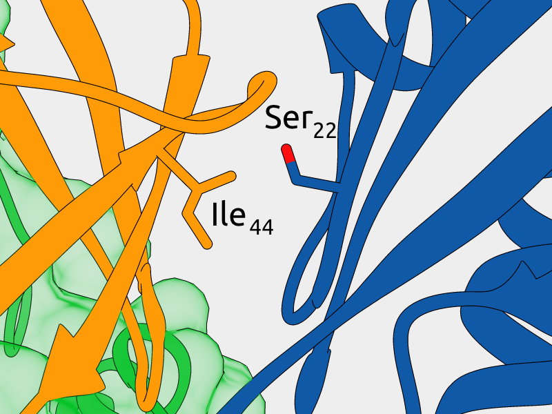
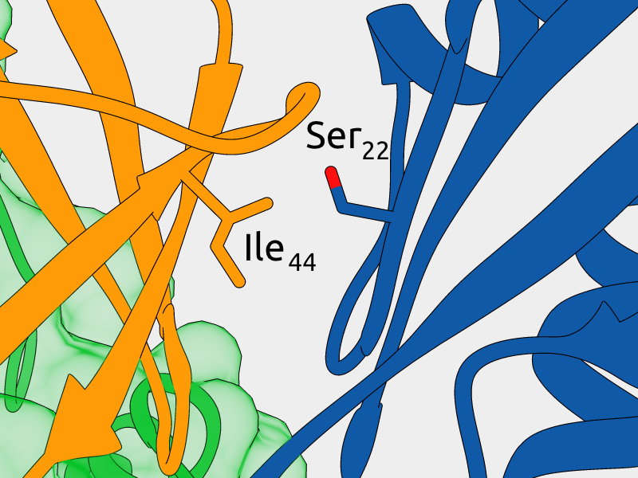
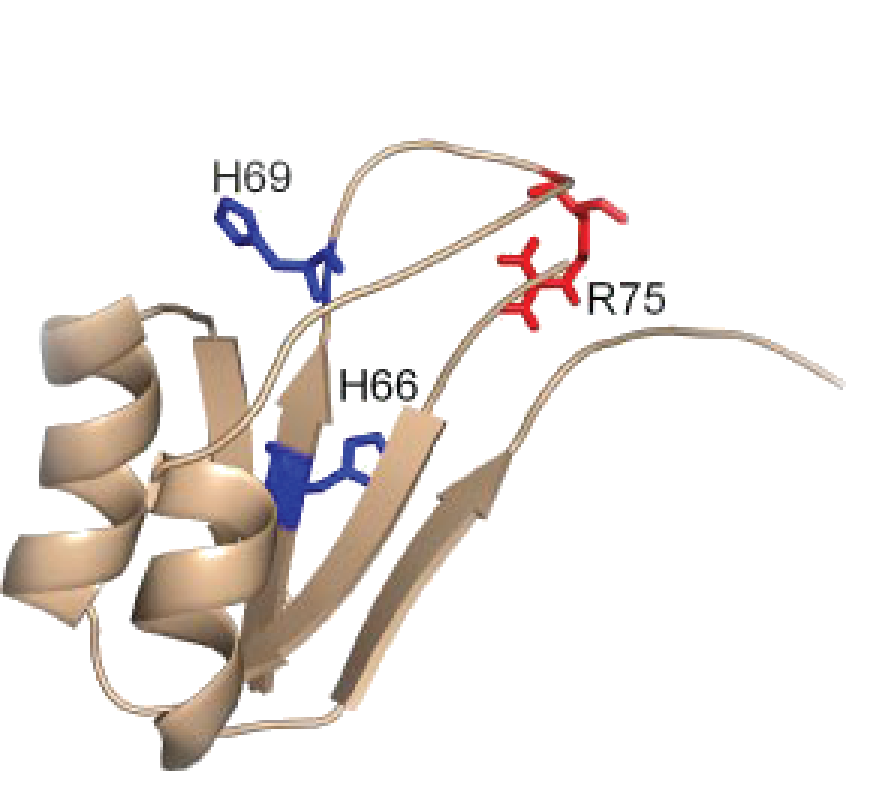

Using computational and experimental methods to understand protein function:
Application to proprotein convertases and other disease-related proteins
Johannes Elferich
June 4th 2015
- Using computers to describe proteins
- Sequences (sec61 translocon complex)
- Structure (Otub1-monoubiquitination)
- How propeptides of proprotein convertases sense pH
- Propeptides contain histidines
- Histidine protonation destabilizes propeptide structure
- Histidine pKa determines pH of activation
- Conclusions & Acknowledgements
- Protein sequences can be represented as strings
>Protein NLYIQWLKDGGPSSGRPPPS -
Protein structures can be represented as lists of atoms and their coordinates
ATOM 1 N MET A 1 27.340 24.430 2.614 ATOM 2 CA MET A 1 26.266 25.413 2.842 ATOM 3 C MET A 1 26.913 26.639 3.531 ATOM 4 O MET A 1 27.886 26.463 4.263 ATOM 5 CB MET A 1 25.112 24.880 3.649 ATOM 6 CG MET A 1 25.353 24.860 5.134 ATOM 7 SD MET A 1 23.930 23.959 5.904 ATOM 8 CE MET A 1 24.447 23.984 7.620 ATOM 9 N GLN A 2 26.335 27.770 3.258 ATOM 10 CA GLN A 2 26.850 29.021 3.898 ATOM 11 C GLN A 2 26.100 29.253 5.202 ATOM 12 O GLN A 2 24.865 29.024 5.330
Pairwise Comparison
1/7 14% Identical
Multiple sequence alignment
Hidden markov model
sequence profiles

Insertion of a zinc-finger domain blocks translocation in the presence of zinc
Hypothesis:
Secreted proteins select against small folded domains at their N-terminusApproach:
Use HMM sequence profiles to quantify the number of secreted and not secreted proteins with small domains at their N-terminusResults

Type of domains

Disulfides
Molecular dynamics
- Coordinates change according to velocity
- Velocities change according to forces
- Forces are calculated according to energy function
Monte-Carlo sampling
- Structure is modified by random move
- New structure is evaluated by energy function
- If the move leads to less favorable energy it is reversed with a probability based on the energy increase
Otub1 stabilizes p53 by inhibiting the E2-Ligase that polyubiquitinates p53

Monoubiquitination of Otub1 is critical for p53 stabilization
E2-Ligase preferentially binds to monoubiquitinated Otub1


- E2-Ligase
- Ubiquitin charged to E2-Ligase
- Otub1
- Ubiquitin ligated to Otub1
Lys59
Lys109
- E2-Ligase
- Ubiquitin charged to E2-Ligase
- Otub1
- Ubiquitin ligated to Otub1
Increased interaction of monoubiquitinated Otub1 with the E2-Ligase
cannot be explained by direct interactions within the known
E2~Ubq/Otub1 complex.
Li, Sun, Elferich et al. Journal of Biological Chemistry 2014
 

- E2-Ligase
- Ubiquitin
- Otub1
- Ubiquitin ligated to Otub1
Mutagenesis of Ser22 blocks binding of monoubiquitinated Otub1 to E2-Ligase
Mutagenesis of Ile44 can rescue binding
Monoubiquitinated Otub1 interacts with E2-Ligase through "backside"
interaction of the conjugated Ubiquitin
Li, Sun, Elferich et al. Journal of Biological Chemistry 2014
- Sequences
- Secreted proteins do not select against small folded domains at their N-terminus
- Testing of genome wide hypotheses is possible due to:
- Abundance of available protein sequences
- Homology detection and domain annotation using Hidden Markov model sequence profiles
- Structures
- Monoubiquitinated Otub1 binds to E2-Ligase due to a "backside" interaction
- Visualization of structures is critical for understanding of protein function and for formulating hypotheses
- Various algorithms can be used to generate structural
ensembles:
- Molecular Dynamics is biophysically meaningful
- Monte-Carlo sampeling allows for more extensive exploration of conformational space
POMC
Bone morphogenic protein
Cadherin
Matrix metalloprotease
Anthrax toxin
HIV gp160
| Name | Specificity | Cellular localization | Tissue localization | Involved in disease | Knockout phenotype |
|---|---|---|---|---|---|
| PC1/3 | Dibasic | Secretory granules | Neurons, endocrine cells | Obesity, Diabetes | Growth retardation, abnormal hormone levels |
| PC2 | Dibasic | Secretory granules | Neurons, endocrine cells | Obesity, Diabetes | Growth retardation, abnormal hormone levels, developmental abnormalities |
| Furin | Dibasic | Golgi apparatus, cell surface, extracellular | Ubiquitous | Cancer, Heart disease, Influenza, HIV, Anthrax | Die on embryonic day 11 |
| PC4 | Basic motif | Granules, cell surface | Germ cells | Infertility | Infertile males |
| PC5/6 | Dibasic | Cell surface | Development, Neurons | Colon tumors | Death at birth, bone defects |
| PACE4 | Dibasic | Cell surface | Development, neurons, glial cells | Ostheoarthritis | 25% death rate before birth, bone defects |
| PC7 | Dibasic | Secretory pathway | Ubiquitous | Immune defects(?) | None |
Mutation of His69 can block furin activation
Homology model of furin propeptide
Histidine protonation states
✂

Hypothesis:
Propeptides of eukaryotic subtilases that need to sense pH for activation have more histidines in their propeptides than prokaryotic subtilasesPF00082: Subtilase family
- Dataset of 6533 sequences with start and end position of the protease domain
Calculated values:
- [His]Pro: Histidine content in propeptide
- [His]Mat: Histidine content in protease domain
- Δ[His]=[His]Pro-[His]Mat: Enrichment of histidines in propeptide
Δ[His]=[His]Pro-[His]Mat: Enrichment of histidines in propeptide
Elferich et al. FASEB 2013
Differrence of Δ[AA] between prokaryotes and eukaryotes for all residues
Secondary structure content of various subtilase propeptides is similar at neutral pH
Only histidine containing propeptides show structure loss at acidic pH
 Dillon, Williamson, Elferich et al. Journal of Molecular Biology 2012
Dillon, Williamson, Elferich et al. Journal of Molecular Biology 2012
Hypothesis:
Furin and PC1/3 activate at different pH values due to differences in histidine pKa values within their propeptidesm/z profile of peptide YHF
m/z profile after exchange at pH 9.0
Rate constant of deuterium uptake
Furin

| Histidine | pKa | kmax |
|---|---|---|
| H52 | 6.07±0.02 | 0.0124±0.0001 |
| H66 | 5.98±0.03 | 0.0069±0.0001 |
| H69 | 6.04±0.05 | 0.0063±0.0002 |
| H80 | 6.02±0.03 | 0.0094±0.0002 |
| H84 | 6.04±0.07 | 0.0073±0.0002 |
PC1/3
| Histidine | pKa | kmax |
|---|---|---|
| H67 | 6.31±0.03 | 0.0068±0.0001 |
| H72 | 5.61±0.06 | 0.0034±0.0001 |
| H75 | 5.97±0.03 | 0.0057±0.0001 |
| H85 | 5.85±0.04 | 0.0052±0.0001 |
NMR structure of PC1/3 propeptide
Predicted pKa values for all 20 structures
- Propeptides encode histidines
- Upon reaching the correct pH for activation the conserved histidine is protonated
- Furin: H69 (pH 6)
- PC1/3: H72 (pH 5.5)
- This triggers a conformational change, exposing the cleavage loop
- Cleavage of the loop in cis or in trans results in activation
Shinde Lab
- Ujwal Shinde
- Danielle Williamson
- Stephanie Dillon
Committee
- Larry David
- Caroline Enns
- David Farrens
- Eric Gouaux
- Mike Harms
Collaborators
- Mushui Dai
- Yuhuang Li
- Bill Skach
- Brian Conti
Collaborators
- Buddy Ullman
- Peter Rotwein
- Scott Landfear
- Monika Davare
- Gary Thomas
- Jimmy Dikeakos
Biochemistry Department
- Amber Jones Burnette
- Christopher Schafer
- Jessica Martin
- Gregory Martin
- Jean Summerton
- Tony Caps
- Susan Kozak
Funding
- American Heart Association
- Tartar Fund
- Vertex Pharmaceuticals
Family
- Henrike Elferich
- Christa Elferich
- Werner Elferich
- Nick Javidi-Sharifi
- Mirjam Javidi-Sharifi
- Bijan Javidi-Sharifi
- Nathalie Javidi-Sharifi